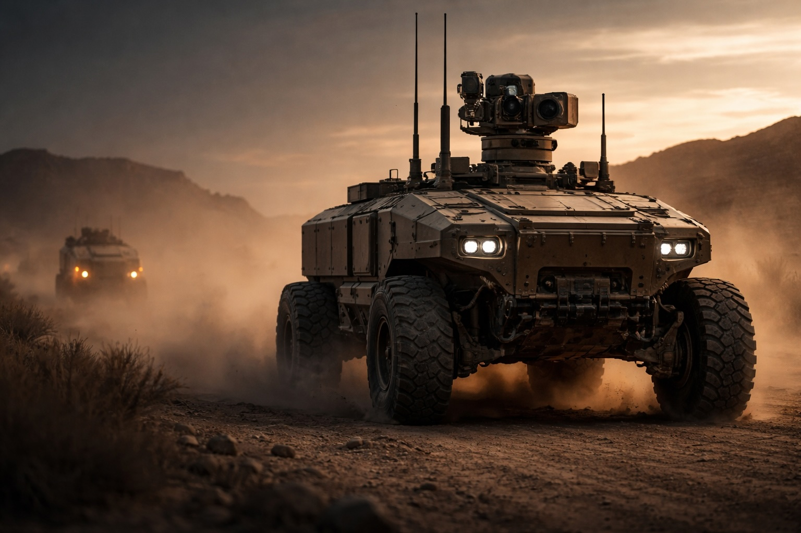
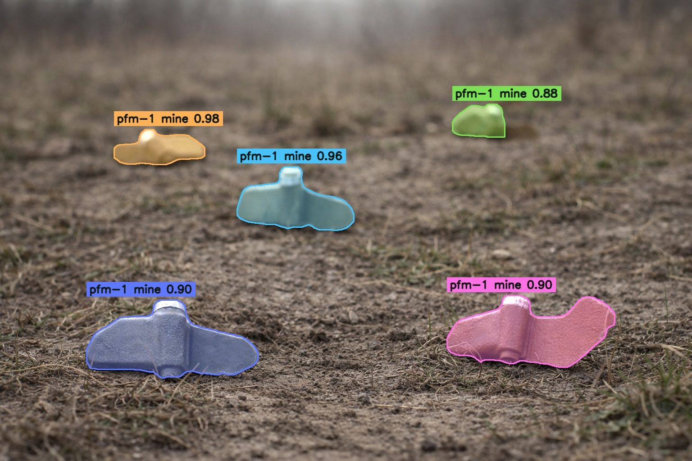

01
Lunar Rover system
Includes space rover autonomy and GNC software for lunar surface guidance, navigation, and mobility.
Defence
TITAN combines a modular hardware platform with a powerful AI software stack for perception, localization, and navigation across GNSS-denied, radio-jammed terrain, giving operators route confidence and mission-ready autonomy in contested environments. Human-on-the-loop (HOTL) keeps operators monitoring and intervening only when necessary.
Defence
Perception uses RGB-D, lidar, thermal, and acoustic sensing to detect obstacles, road features, and environmental conditions in real time. Localization fuses RTK, cameras, lidar, and IMU data to maintain vehicle position and orientation through degraded satellite coverage. Navigation uses perception, localization, and mission data to generate paths and control the vehicle.
Autonomous UGV
Sensor fusion and precise mobility for woodland reconnaissance.
Space
Lunar Rover system for space rover operations and GNC software under degraded comms. Human-on-the-loop (HOTL) lets AI operate autonomously, with operators monitoring and intervening only when necessary for autopilot-like efficiency and speed.
Mining
Remote oversight, fleet movement, and operational visibility for excavation and raw material sites.
Programs
01
Includes space rover autonomy and GNC software for lunar surface guidance, navigation, and mobility.
02
Navigation and mission continuity across dust, heat, distance, and sparse infrastructure.

03
Under-canopy silent operations for biodiversity monitoring, situational awareness, and data analytics.
04
Detection workflows identify PFM-1 mines across mixed grass and dirt terrain for safer route awareness and operator review.

05
Segmentation outputs isolate mine signatures at pixel level to support situational awareness, scene analytics, and decision support.

06
Detection models identify armored vehicle targets in motion, improving battlefield awareness and faster operator validation.
07
Segmentation outputs isolate vehicle contours frame by frame for targeting review, analytics, and mission-support workflows.
08
March 2026 field test footage showing autonomous mobility, operator oversight, and system validation in realistic terrain.
Newsroom
Updates, milestones, and announcements from across Tess Space.
1 / 2
Partners


Video preview